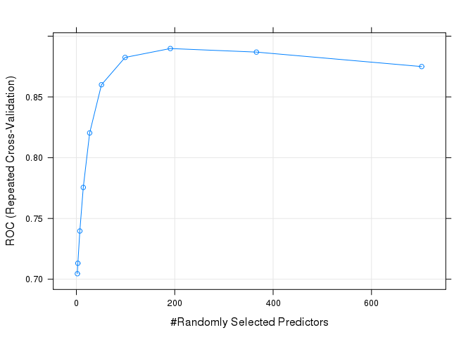
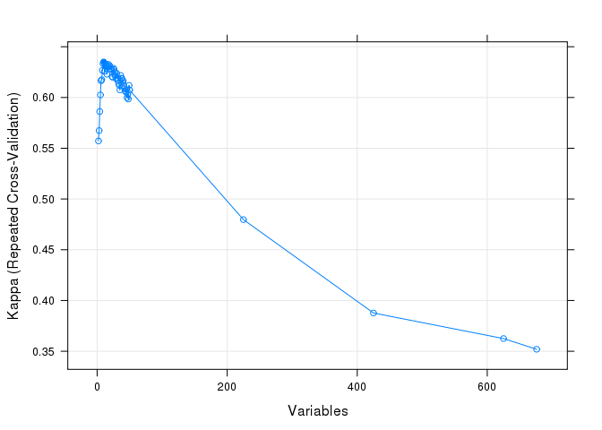
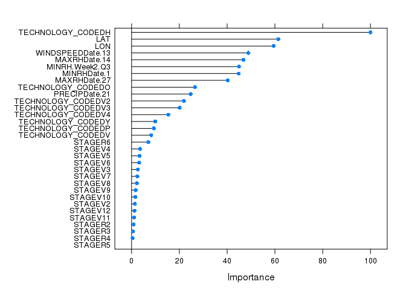

Insect damage in Corn (Zea mays L.) accounts for major yield loss in Brazil and across Latin America. Corn hybrids, with Bacillus thuringiensis (Bt) toxins provide significant protection against insect damage. However, additional factors such as weather also contribute to damage caused by insects. The objective of this study was to predict occurrence of insect damage to corn plants given genotype, plant growth stage, location and weather data.
Accurate prediction of insect damage is expected to enable timely recommendations for precautionary integrated pest management control measures leading to reduced crop damage and losses.
Training data data/OBVS.CSV consisting of 7427 insect incidence observations in corn across Brazil (original source: Velocity)
Daily weather data data/weather_data.txt across Brazil locations for three years, 2013, 2014 and 2015 (original source: Velocity)
Soil type information for Brazil locations derived from the soilDB and integrated based on the geographical proximity to the observed fields.
Test data for 2015 and 2016 used to predict incidence of insect damage given the developed model data/OBVS_EVAL.CSV and data/weather_eval.csv (original source: Velocity).
Majority of the observations in the training data (99%) were for the insect Spodoptera frugiperda. Therefore predictive modeling was limited to Spodoptera frugiperda.
General cleanup was done by removing spaces in the categorical data and formatting dates.
Geographical coordinates (Lat and Long) in both observation and weather data were rounded to 5 decimal places.
Weather data for 30 days prior to the observed insect damage for each referenced fields was added based on information for coordinates within a 25km radius for the location.
Soil type from soilDB was integrated based on geographical proximity to observed field coordinates based on a25km radius.
The test data contained additional plant growth stages (STAGE) not present in the training data: VN, V1, R7 and VE. These stages were replaced with their closet counterparts present in the training data. The plant stage VE was further imputed based on observed plant stages for similar TECHNOLOGY_CODED and DATE within a 25km radius.
Planting dates were estimation based on the DATE of observation (observed insect damage) and crop STAGE.
Summarized weather features including: sum, min, max, mean and median were generated for 1, 2, 3 and 4 weeks prior to the DATE of the observation.
Discrete weather patterns or barcodes (H,M,L) were calculated for 1, 2, 3 and 4 weeks prior to the observed date of insect damage based on comparison of quantiles (variables labeled Q1 to Q4) for each weather parameter.
Area under the curve (AUC) for all weather parameters for 1 to 30 days prior to the observed insect damage was calculated.
Missing test data weather information was imputed based on the median for present data within 25 km matching the DATE of the observation.
The complete workflow code is described in Data_analysis_main.R.
All data analysis functions can be found in scripts/.
## [1] "01_DataIntegration.R" "02_aggregateForWeek.R"
## [3] "03_weatherDataAggregate.R" "04_calculateAUC.R"
## [5] "05_imputeData.R" "06_fullRankModel.R"
## [7] "07_evaluateFullRankModel.R" "08_featureSelection.R"
## [9] "09_predictTestData.R" "10_imputeSTAGE.R"
## [11] "featureSelection.sh" "fullRankModel.sh"Predictive models for insect damage were developed using the Random Forest ensemble modeling algorithm. This approach was selected over others (e.g. SVM, PLS and ANN) due to the robust in-model cross-validation which limits overfitting, ease of tuning and parallelization.
Modeling was conducted using the following workflow:
Optimization of the full rank (all features) model mtry using repeated cross-validation 7 fold repeated 3 times with an mtry tune length of 10 (caret library) based on the area under the receiver operator characteristic curve (ROC) for predictions.
Model validation using a held out 33% of the training data as a pseudo-test set.
Selection of optimal predictive features using recursive feature elimination to generate a feature selected model.
Comparison of the full rank to feature selected model’s performance.
Prediction of the test data insect damage based on the feature selected model.
 The optimal mtry was determined determined at 191
Model cross-validation for each feature subset was conducted using 3 fold repeated cross-validation repeated 3 times.

Optimal features were selected based on maximization of the cross-validated Kappa statistic.
VIP)
## [1] "TECHNOLOGY_CODED" "STAGE" "LON"
## [4] "WINDSPEEDDate.13" "PRECIPDate.21" "MAXRHDate.14"
## [7] "LAT" "MINRH.Week2.Q3" "MAXRHDate.27"
## [10] "MINRHDate.1"full_rank and selected_model predictive performance for trainning and test data| model | tr.time | pred.time | total.time | tune | train.ROC | train.Sens | train.Spec | test.Accuracy | test.Kappa | test.Sensitivity | test.Specificity |
|---|---|---|---|---|---|---|---|---|---|---|---|
| full_rank_model | 35.8 mins | 0.315 secs | 2150 secs | mtry=191 | 0.890 | 0.908 | 0.676 | 0.843 | 0.598 | 0.651 | 0.920 |
| selected_model | 1.27 mins | 0.0734 secs | 76.5 secs | mtry=8 | 0.897 | 0.910 | 0.679 | 0.843 | 0.598 | 0.646 | 0.923 |
Comparison of the full_rank and selected_model predictive performance (above, where) suggests that the reduced feature model (1.5%) has nearly equivalent predictive performance to the full rank model. Based on this observation the selected_model was used to predict insect incidence for the test data.
Our analysis revealed that, random forest based ensemble methods coupled with recursive feature elimination could predict insect damage occurrence with high accuracy (see above). The major predictors contributing to this model were technology coded followed by, location, stage and weather parameters. When technology coded is H, there is high degree of probability of damage occurrence. Similarly of all the developmental stages, R6 seems to be the most susceptible to insect damage. When it comes to the weather parameters, maximum relative humidity 14 days prior to the date of observation and windspeed on day 13 (prior to observation) are suggested to be good predictors for incidence of insect damage (14 and 13 days after respectively). Domain knowledge review of Spodoptera frugiperda information supports the observation that higher relative humidity in the field could enable an increase in the natural predator population of Spodoptera frugiperda and consequently reduce egg hatching and later incidence of insect damage. In conclusion our model could be used to design and recommend alternative integrated pest control measures in addition to existing technology recommendations.
libraries used in the code)## R version 3.1.2 (2014-10-31)
## Platform: x86_64-unknown-linux-gnu (64-bit)
##
## locale:
## [1] LC_CTYPE=en_US.UTF-8 LC_NUMERIC=C
## [3] LC_TIME=en_US.UTF-8 LC_COLLATE=en_US.UTF-8
## [5] LC_MONETARY=en_US.UTF-8 LC_MESSAGES=en_US.UTF-8
## [7] LC_PAPER=en_US.UTF-8 LC_NAME=C
## [9] LC_ADDRESS=C LC_TELEPHONE=C
## [11] LC_MEASUREMENT=en_US.UTF-8 LC_IDENTIFICATION=C
##
## attached base packages:
## [1] stats graphics grDevices utils datasets methods base
##
## other attached packages:
## [1] dplyr_0.4.3 knitr_1.11 randomForest_4.6-10
## [4] caret_6.0-52 ggplot2_2.0.0 lattice_0.20-29
##
## loaded via a namespace (and not attached):
## [1] assertthat_0.1 BradleyTerry2_1.0-6 brglm_0.5-9
## [4] car_2.0-25 codetools_0.2-10 colorspace_1.2-6
## [7] DBI_0.3.1 digest_0.6.8 evaluate_0.8
## [10] foreach_1.4.2 formatR_1.2 grid_3.1.2
## [13] gtable_0.1.2 gtools_3.4.1 highr_0.5
## [16] htmltools_0.3 iterators_1.0.7 lazyeval_0.1.10
## [19] lme4_1.1-7 magrittr_1.5 MASS_7.3-44
## [22] Matrix_1.1-5 mgcv_1.8-7 minqa_1.2.4
## [25] munsell_0.4.2 nlme_3.1-119 nloptr_1.0.4
## [28] nnet_7.3-11 parallel_3.1.2 pbkrtest_0.4-2
## [31] plyr_1.8.3 quantreg_5.11 R6_2.1.0
## [34] Rcpp_0.12.3 reshape2_1.4.1 rmarkdown_0.7
## [37] scales_0.3.0 SparseM_1.6 splines_3.1.2
## [40] stats4_3.1.2 stringi_0.4-1 stringr_1.0.0
## [43] tools_3.1.2 yaml_2.1.13